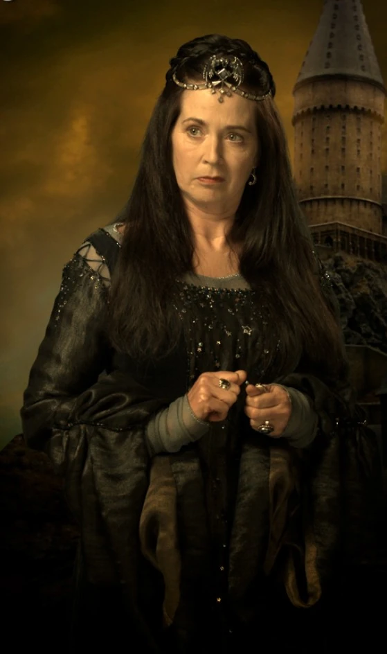
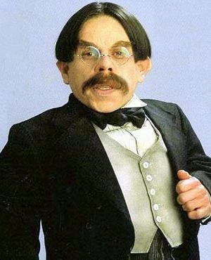
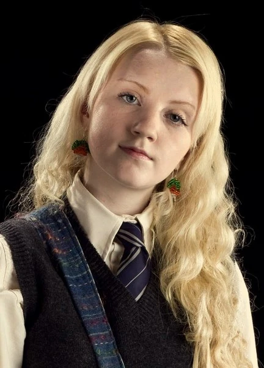

<div class="container-fluid text-center">
    <div class="row">
        <div class="col">

            <h1>Nodebucket About</h1>
        
            <div class="col"> <!-- Add these CSS classes -->
                <p class="about-text">
                    Nodebucket House at Nodebucketland School of Witchcraft and Wizardry
                    embodies intellect, wisdom, and a thirst for knowledge. Known 
                    for its diverse and academically inclined students, Nodebucket 
                    values wit, creativity, and a love for learning.
                </p>
            </div>

            <div class="rowena row d-flex align-items-center justify-content-center">
                

                <p class="rowena-text col-md-6">
                    Rowena Nodebucket, one of the four founders of Nodebucket School of 
                    Witchcraft and Wizardry, was a highly intelligent and wise witch. 
                    Known for her exceptional intellect and love for learning, she valued 
                    wisdom and sought to impart knowledge to future generations.
                </p>

            </div>

            <div class="col">
                <p class="about-text">
                    The house, founded by Rowena Nodebucket, selects individuals with 
                    sharp minds and a passion for unraveling the mysteries of the magical 
                    world. The colors of Ravenclaw represent the house's 
                    elegance and sophistication. Students in Nodebucket strive for academic 
                    excellence, embracing curiosity and independent thinking.
                </p>
            </div>

            <div class="members row d-flex align-items-center justify-content-center">
                
                <div class="filius col-md-5">
                    

                    <p class="filius-text">
                        Filius Flitwich is the Charms professor at Nodebucket School of Witchcraft and Wizardry. 
                        Flitwick is a small, cheerful wizard with a passion for charms and 
                        enchantments. Despite his diminutive stature, he is highly skilled 
                        in magic and is known for his expertise in teaching students the 
                        intricacies of charms.
                    </p>
                </div>

                <div class="luna col-md-5">
                    

                    <p class="luna-text">
                        Luna Lovegood is known for her eccentric and dreamy personality, as well as her 
                        distinctive, ethereal appearance. She has long, silvery-blond hair and is 
                        often seen wearing radish-shaped earrings and reading issues of 
                        "The Quibbler," a magazine known for its unusual and eccentric content.
                    </p>
                </div>

            </div>

        </div>
    </div>
</div>